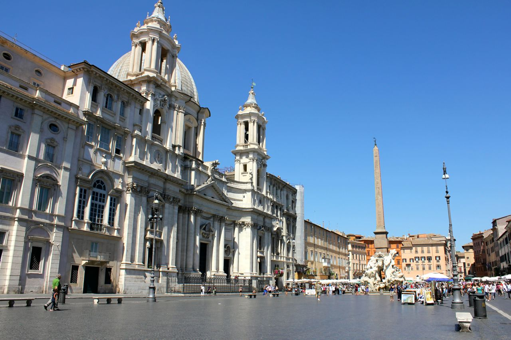

Neighborhoods Of Rome

Trastevere: Perhaps the most charming neighborhood in all of Rome is Trastevere. Though some say the neighborhood is slowly losing its Italian touch due to the increasing popularity of American and international student life, Romans still consider it one of the most beautiful areas in the Eternal City. As you lose yourself down the winding cobblestone streets and dive into an authentic Roman trattoria, you'll soon discover why everyone falls in love with this magnifico quartiere 'just across the Tiber' as its name suggests.

The Colosseum: One of my favorite Rome neighborhoods for strolling, eating and shopping is Monti, which includes via dei Serpenti and in particular, via del Boschetto. It’s a great area with little boutiques and antique shops. But you are a bit far from the other major shopping areas such as the Spanish Steps, so if you do a lot of shopping, you may find you will want to take a taxi back to your hotel. From the Spanish Steps, this will cost around 8-15 Euros, depending on time of day and traffic.This is a pretty well-lit and again, very central Rome neighborhood, so it’s quite safe.
Campo dei Fiori: TCampo dei Fiori, Piazza Navona and the Pantheon really are some of the oldest Rome neighborhoods. They are right in the heart of the historic center. The streets are small and winding, leading to more small hidden streets. There are only a small number of 4 and 5 star hotels here, but a plethora of small 3 star hotels and B&Bs of every type. Space is at a premium so don't expect large rooms, views or balconies.This area is not as easy to get to as Spanish Steps or via Veneto, because are there no Metro stops nearby, but plenty of buses go into the area.You are in very close walking distance to the Vatican and Trastevere.
Trastevere: Trastevere is an old and charming neighborhood across the Tiber river from central Rome. It may seem far but it's a pretty easy walk back into the center. However, it's not the most convenient place to stay for having easy access to all the sites. Choose Trastevere if you want to feel like you are in a different part of the city from most of the other tourists (although tourists abound here too.). This neighborhood does not really have any big luxury hotels but there are plenty of small 3 star hotels and B&Bs.There are no metro stops here, but buses and a tram go in. However, to get to the innermost of Trastevere's streets, you will need to walk a bit or take a cab.
Vatican/Prati:Prati is one of the more upscale areas of Rome, filled with residential apartment buildings, professional
offices and lovely shops and restaurants. The area closer to the Vatican itself is a bit more chaotic and touristy. Safety should not be
an issue.These Rome neighborhoods are easily accessible by metro (red line A) and bus. Although it is across the Tiber river from downtown
Rome, you can walk here easily crossing one of the many bridges.
You can find some excellent deals on hotels and B&Bs in these neighborhoods, partly because they are not in the center of Rome, and partly
because there is a lot of competition.Do not look for rooms with a view here.If you stay in the Vatican or Prati areas, you will of
course have an easy time visiting the Vatican, but you are across the river from the historical center of Rome. It is easy to walk or
take public transportation, but either of these options will take a little time.Hotels and B&Bs in Prati should be fairly quiet, particularly
if you are on a more residential street. By the Vatican, you may encounter more noise, just because it’s more congested and more touristy.
More Rome Neighborhoods
The above are the most central, and probably most desirable Rome neighborhoods to stay in. The below are areas of Rome that you may find are more residential, and just a bit further from all the historic sites. They all do have something to offer, though:
Parioli/Flaminio: This area of Rome is very residential, and most of it pretty posh. You won’t find as much graffiti on the walls, and you’ll notice larger, more elegant buildings and wider streets here.This is a very safe area of Rome. There are some elegant 5-star hotels in these Rome neighborhoods, but also some more modest categories. Don’t expect rates to be much less than in the historic center.Some of the 5-star hotels, particularly near the Borghese Park, may offer some views from rooms on the upper floors, and certainly from their rooftops.There is a tram that goes into the Flaminia neighborhood, and there are plenty of bus options, although no Metro to either. You will be a bit far from all the sites and will need to use the bus system or taxis to get into the historic center of Rome to see the sites.
Aventino/Testaccio: You will enjoy these Rome neighborhoods just outside the center, for they do offer a glimpse of more lived-in Rome, but it is less convenient to get to all the sites, and you will need to use public transportation.The Metro blue line (B) arrives at Piramide, which is somewhat near the Aventine and Testaccio neighborhoods. Otherwise, there are plenty of buses serving these areas. The Aventine is home to some of the most elegant and private homes in Rome. There are barely any hotels or restaurants on the hill itself, but there is a lot to choose from in the Testaccio area. Both are safe neighborhoods in Rome.
Salaria/Nomentana/Trieste: The Salaria/Nomentana/Trieste neighborhoods are decidedly residential. They are mostly slightly upscale and considered by most Romans to be desirable areas to live in. You will find some more modern architecture here (i.e. from the early 1900’s as well as earlier.) For the most part, these Rome neighborhoods are considered to be quite safe. There are some B&Bs options in this area, but also some nicer hotels. Many of these hotels cater to business people and professionals. Don’t expect costs to be that much lower than in the historic center, although they may be slightly less expensive just because they are further away from the touristic center. You may find some hotels with partial views onto a park such as villa Ada. This is not the easiest area from which to visit Rome. You will need to take buses or taxis. The traffic is almost always intense so either of these options will take a lot of your time. Overall, as this is very residential, expect to find more quiet accommodation in Rome here. This area is full of excellent restaurants, wine bars and, in particular, pastry shops!